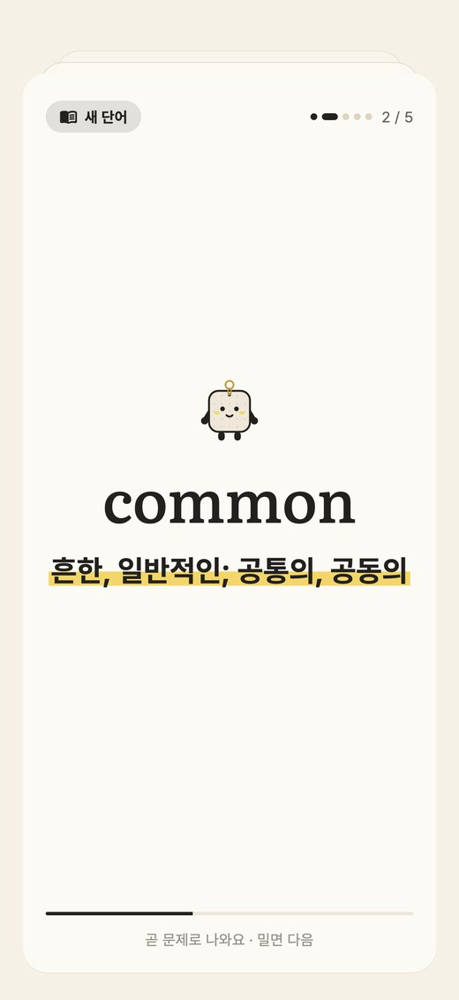
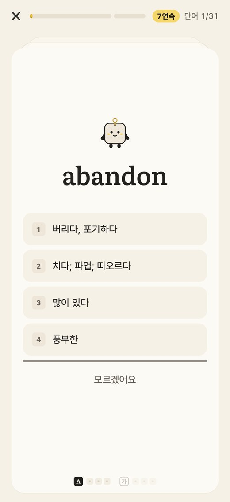
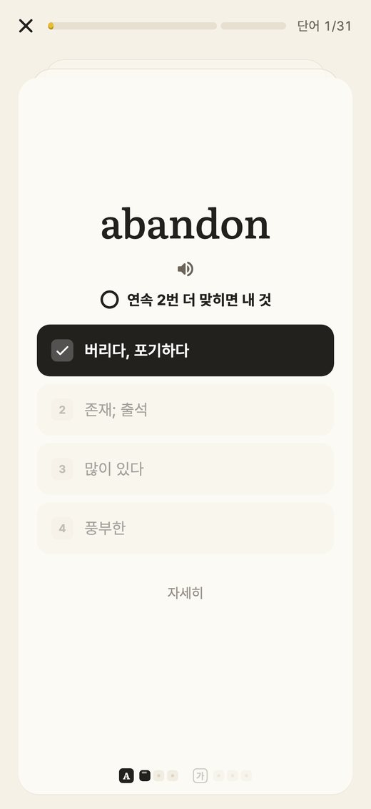
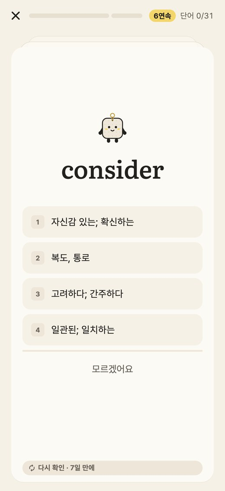

단숙이 › 공부 방법
학습 연구가 뒷받침하는
단숙이 공부법
키링을 모으는 건 게임처럼 보여도, 공부하는 방식은 학습 연구에서 가져왔어요. 핵심은 두 가지예요. 보고 알아보는 대신 먼저 떠올리기, 그리고 잊을 때쯤 다시 만나기.
하루 공부, 네 단계

카드로 먼저 봐요
새 단어는 플래시카드 다섯 장으로 뜻 · 발음 · 예문을 먼저 보고, 바로 그 다섯 개를 문제로 풀어요. 같은 단어 사이에는 다른 문제가 끼어 있어서 바로 앞에서 본 걸 베끼듯 맞히지 않아요.
근거 · Karpicke & Roediger 2008 · Webb 외 2020

먼저 떠올리고 골라요
보기는 1초 뒤에 나와요. 그 사이에 뜻(또는 영어)을 머릿속에서 먼저 꺼내 보는 거예요. 모르면 '모르겠어요'를 누르면 돼요. 틀린 건 벌이 아니라 다시 만날 단어예요.
근거 · Karpicke & Roediger 2008 · Little 외 2012 · Yang 외 2021 · Agarwal 외 2021

바로 떠오르면 내 것
4초 안에 맞혀야 통과예요. 영어 → 뜻, 뜻 → 영어를 각각 3번 연속 맞히면 외운 단어가 돼요. 틀리면 정답과 예문을 보여 주고, 그 방향만 다시 세요. 처음 본 단어를 두 방향 모두 바로 맞히면 금방 외운 단어로 넘어가요.
근거 · Rawson & Dunlosky 2011 · Perfetti 2007 · Webb 2009 · Butler & Roediger 2008

잊을 때쯤 다시 만나요
외운 단어는 2일 · 7일 · 21일 뒤에 한 번씩 다시 확인해요. 세 번 다 맞히면 단단히 외운 단어예요. 틀려도 키링 조각은 빠지지 않고, 다시 외우면 돼요.
근거 · Cepeda 외 2006 · Rawson & Dunlosky 2011 · Latimier 외 2021 · Kim & Webb 2022 · Soderstrom & Bjork 2015
하루 몫은 작게
- 단어 30개 · 숙어 12개가 오늘 몫이에요. 설정에서 바꿀 수 있어요.
- 쉬운 등급부터 나오고, 같은 등급 안에서는 골고루 섞여 나와요.
- 오늘 몫을 다 하면 계속하기로 더 할 수 있어요.
- 오늘의 공부 카드 아래에서 오늘 공부 · 복습 · 1분만을 골라요. 복습은 외운 단어만 다시, 바쁜 날엔 1분만(익히던 단어 다섯 문제) 해도 하루로 쳐요. 쉬어도 칠한 칸은 그대로예요.
- 난이도는 푸는 걸 보고 단숙이가 맞춰요. 난이도 자세히 보기 ›
참고한 연구 15편
최근 연구 · 2020년 이후
- Yang, Luo, Vadillo, Yu & Shanks (2021) · 교실 연구를 모아 보니 퀴즈로 스스로 확인하면 성적이 확실히 올랐어요. Psychological Bulletin 147
- Agarwal, Nunes & Blunt (2021) · 실제 학교 · 교실 실험 50개 대부분에서 떠올리기 연습이 중간 이상 효과를 냈어요. Educational Psychology Review 33
- Latimier, Peyre & Ramus (2021) · 떠올리기를 몰아서보다 간격을 두고 할 때 훨씬 오래 기억했어요. Educational Psychology Review 33
- Kim & Webb (2022) · 외국어 단어도 간격을 두고 연습할 때 더 오래 남았어요(실험 48개). Language Learning 72
- Webb, Yanagisawa & Uchihara (2020) · 플래시카드처럼 단어에 집중하는 공부는 바로는 잘 떠올리지만, 시간이 지나면 줄어 다시 보기가 필요해요. The Modern Language Journal 104
기초 연구
- Karpicke & Roediger (2008) · 다시 읽기보다 다시 떠올리기가 일주일 뒤 기억을 크게 늘렸어요. Science 319
- Little, Bjork, Bjork & Angello (2012) · 그럴듯한 오답이 섞인 객관식은 답을 떠올리게 만들어 배움에 도움이 돼요. Psychological Science 23
- Rawson & Dunlosky (2011) · 처음엔 3번 맞힐 때까지, 그 뒤 날을 두고 다시 익히기를 권해요. J. of Experimental Psychology: General 140
- Perfetti (2007) · 단어를 빠르고 정확하게 떠올리는 힘이 읽기 이해를 좌우해요. Scientific Studies of Reading 11
- Webb (2009) · 뜻에서 단어를 꺼내는 연습이 더 많은 단어 지식을 남겨요. RELC Journal 40
- Cepeda, Pashler, Vul, Wixted & Rohrer (2006) · 실험 317개를 모아 보니 간격을 두고 공부할 때 더 오래 기억했어요. Psychological Bulletin 132
- Butler & Roediger (2008) · 객관식 뒤에 정답을 알려 주면 배움이 커져요. Memory & Cognition 36
- Dunlosky, Rawson, Marsh, Nathan & Willingham (2013) · 여러 공부법 가운데 스스로 시험하기와 간격 두기가 가장 효과가 컸어요. Psychological Science in the Public Interest 14
- Wilson, Shenhav, Straccia & Cohen (2019) · 너무 쉽지도 어렵지도 않게, 대략 85% 맞히는 수준에서 가장 빨리 배워요. Nature Communications 10
- Soderstrom & Bjork (2015) · 연습할 때 잘 맞히는 것과 오래 기억하는 것은 다를 수 있어요. 그래서 며칠 뒤 기억도 함께 봐요. Perspectives on Psychological Science 10